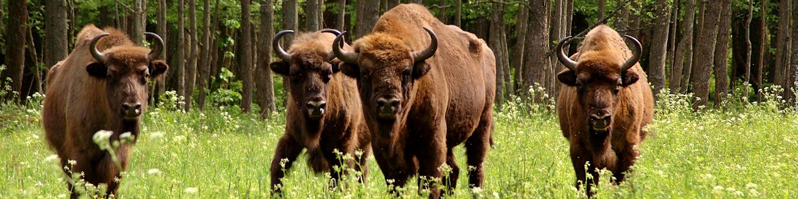

Parki narodowe to jedna z form ochrony przyrody w Polsce. Zgodnie z ustawą o ochronie przyrody z 2004 r. obejmuje obszar wyróżniający się szczególnymi wartościami przyrodniczymi, naukowymi, społecznymi, kulturowymi i edukacyjnymi, o powierzchni nie mniejszej niż 1000 ha, na którym ochronie podlega cała przyroda oraz walory krajobrazowe. Park narodowy tworzy się w celu zachowania różnorodności biologicznej, zasobów, tworów i składników przyrody nieożywionej i walorów krajobrazowych, przywrócenia właściwego stanu zasobów i składników przyrody oraz odtworzenia zniekształconych siedlisk przyrodniczych, siedlisk roślin, siedlisk zwierząt lub siedlisk grzybów.
Babiogórski Park Narodowy
Babiogórski Park Narodowy
Na terenie parku opisano 650 gatunków roślin naczyniowych, prawie 280 gatunków mchów oraz liczne porosty, glony i wątrobowce. Występuje tutaj 70 gatunków wysokogórskich oraz 54 objęte ochroną gatunkową. M.in. mają tu swoje stanowiska tak rzadkie w Polsce gatunki roślin, jak: okrzyn jeleni, rogownica alpejska, wyblin jednolistny, turzyca pchla, tocja karpacka, tojad morawski, zimoziół północny. Symbolem parku jest okrzyn jeleni, który występuje tylko w Babiogórskim Parku Narodowym.
Na Babiej Górze widoczny jest piętrowy układ roślinności górskiej.

Białowieski Park Narodowy
Zdjęcie przedstawiające park narodowy
Puszcza Białowieska jest najlepiej zachowanym lasem naturalnym na Nizinie Wschodnioeuropejskiej. Ponad 2/3 powierzchni parku zajmują lasy liściaste. Największą powierzchnię zajmują lasy grądowe (dębowo-grabowe), które rosną na najżyźniejszych glebach puszczy. W miejscach zalewanych przez kilka miesięcy wodą, rosną olsy i łęgi, składające się głównie z olszy czarnej i jesionu. W suchszych miejscach rosną natomiast bory sosnowe, świerkowe i mieszane. Występuje tu 20 zespołów leśnych. Ogólnie flora parku liczy ponad 1000 gatunków roślin, w tym 728 gatunków roślin naczyniowych, 277 gatunków porostów. Spośród szczególnie rzadkich roślin należy wymienić pełnika europejskiego, kosaćca syberyjskiego, arnikę górską i fiołka bagiennego.
Bieszczadzki Park Narodowy
Zdjęcie przedstawiające park narodowy
Bieszczadzki Park Narodowy stanowi ostoję dla przeszło 230 gatunków kręgowców, w tym 58 gatunków ssaków. W jego granicach występują prawie wszystkie krajowe gatunki dużych ssaków drapieżnych z niedźwiedziem, wilkiem, rysiem i żbikiem oraz roślinożernych, z żubrem i jeleniem karpackim. W latach 60. XX w. z ośrodków hodowlanych w Pszczynie i Niepołomicach przywieziono w Bieszczady blisko 20 żubrów. Zwierzęta te na tyle się tutaj zaaklimatyzowały i dostosowały do górskich warunków, że obecnie ich liczba sięga 280 osobników, z czego kilkadziesiąt przebywa na terenie parku. Jest to największe dziko żyjące górskie stado tych zwierząt na świecie.
Słowiński Park Narodowy
Zdjęcie przedstawiające park narodowy
Na terenie Parku występują zbiorowiska: wydmowe, torfowiskowe, łąkowe i leśne z czego 10% to bory. Odnaleźć tu można naturalne ciągi sukcesyjne, od roślin pionierskich pojawiających się na plażach do typowych nadmorskich borów bażynowych. Występuje m.in. wydmuchrzyca piaskowa, a innymi gatunkami pionierskimi są rukwiel nadmorska i honkenia piaskowa. Spośród lasów parku 80% stanowią bory.
Ogółem w Parku występuje około 920 gatunków roślin naczyniowych, 165 gatunków mszaków, 500 gatunków glonów, 424 gatunki grzybów, z których 46 jest objętych ochroną ścisłą, a 15 częściową.
Tatrzański Park Narodowy
Zdjęcie przedstawiające park narodowy
Klimat Tatr, a co za tym idzie ich roślinność, charakteryzuje się piętrowością. Piętro najniższe, czyli piętro regla dolnego, porastają lasy świerkowe, bukowe i jodłowe. Regiel górny to prawie wyłącznie bór świerkowy, rzadko tylko występuje reliktowy bór limbowo-świerkowy. Piętro kosodrzewiny (1550–1800 m) porasta roślinność krzewiasta z przewagą kosodrzewiny. Piętro hal to murawy wysokogórskie z bogatą roślinnością alpejską. Można tu spotkać m.in. wiele gatunków goryczek, goździka lodowcowego, sasankę alpejską. W piętrze turni roślin jest niewiele, choć niektóre z nich są silnie przywiązane do tego piętra wysokościowego np. goryczka przezroczysta i jaskier lodnikowy.